Modelo relacional de base de datos
Modelo relacional de base de datos
El modelo relacional (RM) representa la base de datos como una colección de relaciones. Una relación no es más que una tabla de valores. Cada fila de la tabla representa una colección de valores de datos relacionados. Estas filas de la tabla denotan una entidad o relación del mundo real.
El nombre de la tabla y los nombres de las columnas son útiles para interpretar el significado de los valores en cada fila. Los datos se representan como un conjunto de relaciones. En el modelo relacional, los datos se almacenan como tablas. Sin embargo, el almacenamiento físico de los datos es independiente de la forma en que los datos están organizados lógicamente.
Conceptos del modelo relacional
Tablas
En el modelo relacional, las relaciones se guardan en formato de tabla. Se almacena junto con sus entidades. Una tabla tiene dos filas y columnas de propiedades. Las filas representan registros y las columnas representan atributos.
Columna
La columna representa el conjunto de valores para un atributo específico.
Atributo
Cada columna de una tabla. Los atributos son las propiedades que definen una relación. por ejemplo, NumeroEstudiante, Nombre, etc.
Tupla
No es más que una sola fila de una tabla, que contiene un solo registro.
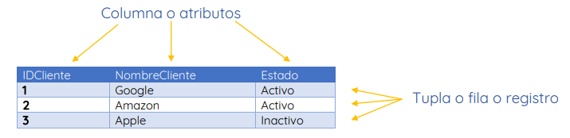
Esquema de relación
Un esquema de relación representa el nombre de la relación con sus atributos.
Grado
El número total de atributos que en la relación se denomina grado de relación.
Cardinalidad
Número total de filas presentes en la tabla.
Instancia de relación
La instancia de relación es un conjunto finito de tuplas en el sistema RDBMS. Las instancias de relación nunca tienen tuplas duplicadas.
Clave de relación
Cada fila tiene uno, dos o varios atributos, lo que se denomina clave de relación.
Dominio de atributo
Cada atributo tiene un valor y alcance predefinidos que se conoce como dominio de atributo.
Restricciones de integridad relacional
Las restricciones de integridad relacional en DBMS se refieren a condiciones que deben estar presentes para una relación válida. Estas restricciones relacionales en DBMS se derivan de las reglas en el mini mundo que representa la base de datos. Hay muchos tipos de restricciones de integridad en DBMS. Las restricciones del sistema de gestión de bases de datos relacionales se dividen principalmente en tres categorías principales:
- Restricciones de dominio.
- Restricciones clave.
- Restricciones de integridad referencial.
- Restricciones de dominio.
Las restricciones de dominio
Las restricciones de dominio se pueden violar si un valor de atributo no aparece en el dominio correspondiente o no es del tipo de datos apropiado. Especifican que, dentro de cada tupla el valor de cada atributo debe ser único. Esto se especifica como tipos de datos que incluyen datos enteros, números reales, caracteres, booleanos, cadenas de longitud variable, etc.
Restricciones clave
Un atributo que puede identificar de forma única una tupla en una relación se denomina llave primaria. El valor del atributo para diferentes tuplas en la relación debe ser único.
Ejemplo: En la tabla dada, ClienteID es un atributo clave de la tabla Clientes. Es más probable que tenga una única clave para un cliente, ClienteID = 1 es solo para NombreCliente = ”Google”.
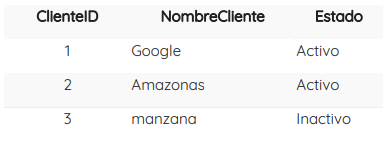
Restricciones de integridad referencial
Las restricciones de integridad referencial en DBMS se basan en el concepto de claves externas. Una clave externa es un atributo importante de una relación al que se debe hacer referencia en otras relaciones. El estado de restricción de integridad referencial ocurre cuando la relación se refiere a un atributo clave de una relación diferente o igual. Sin embargo, ese elemento clave debe existir en la tabla.
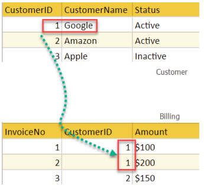
En el ejemplo anterior, tenemos 2 relaciones, Cliente y Facturación.
La tupla para ClienteID = 1 se hace referencia dos veces en la relación Facturación. Entonces sabemos NombreCliente = Google tiene un monto de facturación de $ 300.
Mejores prácticas para crear un modelo relacional
- Los datos deben representarse como una colección de relaciones.
- Cada relación debe describirse claramente en la tabla.
- Las filas deben contener datos sobre instancias de una entidad.
- Las columnas deben contener datos sobre los atributos de la entidad.
- Las celdas de la tabla deben contener un solo valor.
- Cada columna debe tener un nombre único.
- No hay dos filas que sean idénticas.
- Los valores de un atributo deben ser del mismo dominio.
Ventajas de usar el modelo relacional
- Simplicidad: un modelo de datos relacionales en DBMS es más simple que el modelo jerárquico y de red.
- Independencia estructural: la base de datos relacional solo se ocupa de los datos y no de una estructura. Esto puede mejorar el rendimiento del modelo.
- Fácil de usar: el modelo relacional en DBMS es fácil ya que las tablas que constan de filas y columnas son bastante naturales y fáciles de entender.
- Capacidad de consulta: hace posible que un lenguaje de consulta de alto nivel como SQL evite la navegación compleja en la base de datos.
- Independencia de los datos: la estructura de la base de datos relacional se puede cambiar sin tener que cambiar ninguna aplicación.
- Escalable: con respecto a una cantidad de registros, o filas, y la cantidad de campos, una base de datos debe ampliarse para mejorar su usabilidad.
Desventajas de usar el modelo relacional
- Pocas bases de datos relacionales tienen límites en la longitud de los campos que no se pueden exceder.
- Las bases de datos relacionales a veces pueden volverse complejas a medida que aumenta la cantidad de datos y las relaciones entre los datos se vuelven más complicadas.
- Los sistemas de bases de datos relacionales complejos pueden conducir a bases de datos aisladas donde la información no se puede compartir de un sistema a otro.
Planificación de bases de datos relacionales
Paso 1
Determine las categorías de información que necesitará la base de datos relacional. Estas categorías serán las tablas de la base de datos. Por ejemplo, una base de datos de ventas puede incluir estas tablas: Clientes, que incluye información de clientes; Facturas, que incluye información de pedidos; y Productos, que incluye información de productos.
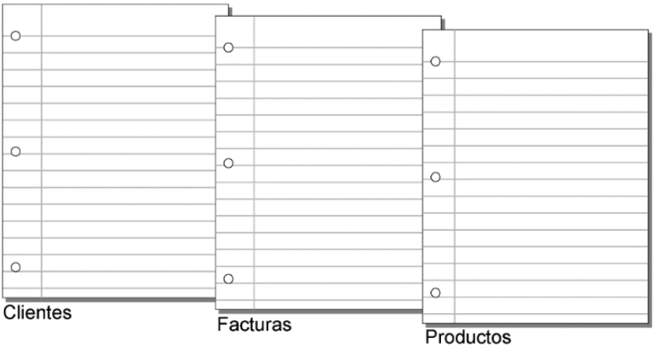
Paso 2
Determine cómo se relacionan entre sí las tablas. Para ello, escriba frases sencillas que describan la forma en la que interactúan las categorías como, por ejemplo, "los clientes realizan pedidos de productos" y "las facturas registran los pedidos de los clientes".
Paso 3
Conecte una tabla a otra para indicar una relación entre ellas. Por ejemplo, un cliente puede tener facturas y las facturas pueden tener productos.
Si una tabla no tiene ninguna relación con otra, es probable que sea innecesaria. En este ejemplo, la tabla Empleados no se ajusta a esa base de datos relacional o al menos al fragmento de base de datos que desea crear en ese momento.
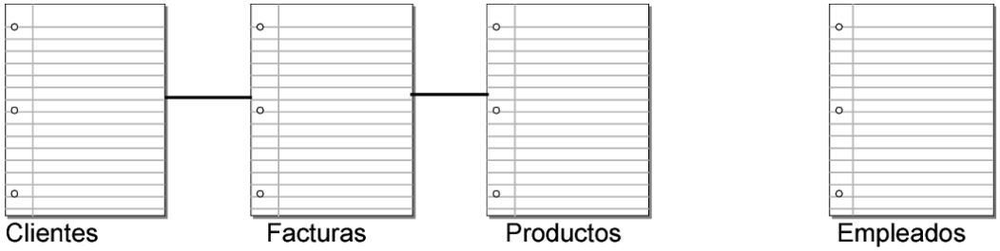
Paso 4
Indique el tipo de relación entre las tablas conectándolas con un símbolo representativo. En una relación de uno a uno, un registro de la Tabla A se asocia a un registro de la Tabla B.
En una relación de uno a muchos, un registro de la Tabla A se asocia a varios registros de la Tabla B. En una relación de muchos a muchos, varios registros de la Tabla A se asocian a varios registros de la Tabla B.
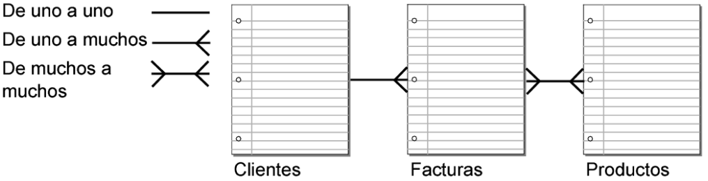
En este ejemplo se muestra que:
- Un cliente puede tener muchas facturas.
- Un producto puede aparecer en muchas facturas.
- Una factura puede tener muchos productos.
Paso 5
Tenga en cuenta que hay una relación de muchos a muchos entre Facturas y Productos. No puede configurar directamente una relación de muchos a muchos entre las dos tablas. Las bases de datos relacionales administran directamente las relaciones de uno a uno y de uno a muchos. Debe resolver la relación de muchos a muchos mediante una tabla intermedia, que divida la relación de muchos a muchos en dos relaciones de uno a muchos. Para solucionar el problema en este ejemplo, añada la tabla intermedia Elementos de línea para almacenar información sobre los productos vendidos.

Tras resolver la relación de muchos a muchos, en este ejemplo se muestra que: - Un cliente puede tener muchas facturas. - Una factura puede tener muchos elementos de línea. - Un producto puede aparecer en muchos elementos de línea.
Paso 6
Determine los campos que necesitará cada tabla. Cada tabla tiene sólo un tema, y todos los campos de esa tabla hacen referencia únicamente a ese tema. Por ejemplo, los campos de un registro de la tabla Clientes almacenan toda la información sobre un cliente.
Por este motivo, debe asignar a cada cliente un número de identificación exclusivo. En la base de datos, esta es la clave principal. No introduciría ningún número de identificación de cliente en la tabla a no ser que tuviera que añadir un cliente nuevo. Por lo tanto, la existencia de un número de cliente determina la existencia de un registro. La tabla Clientes puede también incluir campos para el nombre, la dirección y el número de teléfono del cliente.
La tabla Productos puede incluir campos para el número de identificación del producto, el precio por unidad de cada producto y la cantidad disponible en existencias. La tabla Elementos de línea puede incluir campos para los números de identificación de productos y facturas, así como para el nombre, el precio por unidad, la cantidad y el precio total de cada artículo vendido. La tabla Facturas puede incluir campos para el número de identificación de facturas, la fecha del pedido y el vendedor.
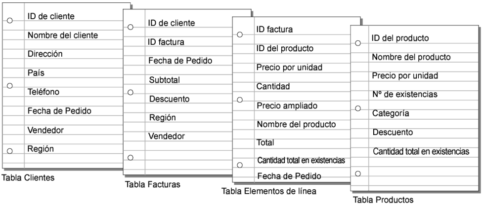
Paso 7
Determine el campo de clave principal (o campos para una relación de varios criterios) para cada tabla e indique cada uno en su plan. A continuación, indique el campo o los campos de clave externa de cada tabla. En este ejemplo:
- Las claves principales son Clientes::ID de cliente, Facturas::ID de factura, Productos::ID del producto y Elementos de línea::ID de elemento.
- Las claves externas son Facturas::ID de cliente y Elementos de línea::ID del producto.
Para mostrar datos de clientes en la tabla Facturas, debe tener un campo común entre las dos tablas a fin de crear una relación. ID de cliente es el campo común. En la tabla Clientes, es la clave principal; en la tabla Facturas, es la clave externa.
En la tabla Elementos de línea, ID del producto es el campo común entre las tablas Elementos de línea y Productos. En la tabla ID del producto, este campo es la clave principal; en la tabla Elementos de línea, es la clave externa.
Estos campos de clave son del tipo llave foránea.
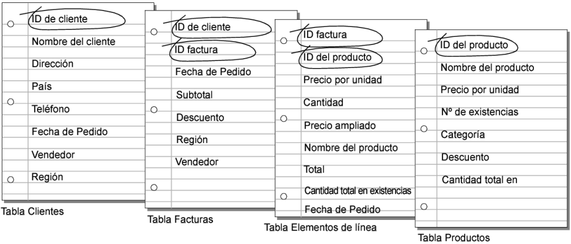
Paso 8
En cada una de las tablas, establezca qué campos van a almacenar datos y cuáles se usarán desde otras tablas relacionadas.
En función del tema de la tabla, puede comprobar en qué ubicación es más lógico almacenar los datos y dónde se deben utilizar los datos de una tabla relacionada. Todos los campos de clave deberían aparecer solo una vez en la base de datos, a excepción de los campos de coincidencia. Elimine las ocurrencias de los campos que no pertenezcan al tema de la tabla.
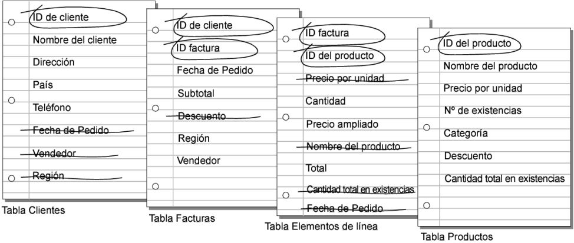
Paso 9
Conecte cada clave principal con su clave externa(llave foránea) correspondiente en la tabla relacionada.
Lo que establece una relación entre tablas es que sus campos de clave contienen datos que coinciden con los criterios de la relación.
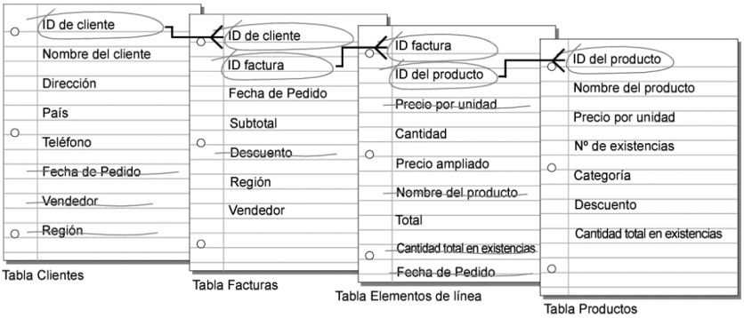
Este plan indica ahora:
- Un cliente puede tener muchas facturas diferentes, pero una factura individual puede tener solo un cliente.
- Una factura puede tener muchos elementos de línea, pero solo un elemento de línea individual aparece en una factura.
- Un producto puede aparecer en muchos elementos de línea diferentes, pero un elemento de línea individual solo tiene un producto.
Normalización de bases de datos
Descripción de la normalización
La normalización es el proceso de organización de datos en una base de datos. Esto incluye crear tablas y establecer relaciones entre dichas tablas de acuerdo con reglas diseñadas tanto para proteger los datos como para que la base de datos sea más flexible al eliminar la redundancia y la dependencia incoherente.
Los datos redundantes desperdician espacio en disco y crean problemas de mantenimiento. Si se deben cambiar los datos que existen en más de un lugar, los datos deben cambiarse exactamente del mismo modo en todas las ubicaciones. Un cambio de dirección de cliente es mucho más fácil de implementar si los datos se almacenan solo en la tabla Clientes y en ninguna otra parte de la base de datos.
Existen algunas reglas para la normalización de la base de datos. Cada regla se denomina "formulario normal". Si se observa la primera regla, se dice que la base de datos está en "primera forma normal". Si se observan las tres primeras reglas, se considera que la base de datos está en "tercera forma normal". Aunque otros niveles de normalización son posibles, la tercera forma normal se considera el nivel más alto necesario para la mayoría de las aplicaciones.
Al igual que con muchas reglas y especificaciones formales, los escenarios del mundo real no siempre permiten el cumplimiento perfecto. En general, la normalización requiere tablas adicionales y algunos clientes lo encuentran engorroso. Si decide infringir una de las tres primeras reglas de normalización, asegúrese de que la aplicación anticipe cualquier problema que pueda producirse, como datos redundantes y dependencias incoherentes.
Las descripciones siguientes incluyen ejemplos.
Primera forma normal:
- Elimine los grupos de repetición en tablas individuales.
- Cree una tabla independiente para cada conjunto de datos relacionados.
- Identifique cada conjunto de datos relacionados con una clave principal.
No use varios campos en una sola tabla para almacenar datos similares. Por ejemplo, para realizar un seguimiento de un elemento de inventario que puede venir de dos orígenes posibles, un registro de inventario puede contener campos para Código de proveedor 1 y Código de proveedor 2.
¿Qué sucede cuando se agrega un tercer proveedor? Agregar un campo no es la respuesta; requiere modificaciones de programa y tabla y no se adapta sin problemas a un número dinámico de proveedores. En su lugar, coloque toda la información del proveedor en una tabla independiente denominada Proveedores y, a continuación, vincule el inventario a los proveedores con una clave de número de elemento o proveedores para realizar un inventario con una clave de código de proveedor.
Segunda forma normal
- Cree tablas independientes para conjuntos de valores que se aplican a varios registros.
- Relaciona estas tablas con una clave externa.
Los registros no deben depender de nada que no sea la clave principal de una tabla (una clave compuesta, si es necesario). Por ejemplo, considere la dirección de un cliente en un sistema de contabilidad. La dirección es necesaria para la tabla Clientes, pero también para las tablas Pedidos, Envío, Facturas, Clientes y Colecciones. En lugar de almacenar la dirección del cliente como una entrada independiente en cada una de estas tablas, guárdala en un solo lugar, ya sea en la tabla Clientes o en una tabla Direcciones independiente.
Tercera forma normal
- Elimine los campos que no dependen de la clave.
Los valores de un registro que no forman parte de la clave de ese registro no pertenecen a la tabla. En general, cada vez que el contenido de un grupo de campos se pueda aplicar a más de un único registro de la tabla, considere la posibilidad de colocar esos campos en una tabla independiente.
Por ejemplo, en una tabla contratación de empleados, se puede incluir el nombre universitario y la dirección de un candidato. Pero necesita una lista completa de universidades para los envíos de correo en grupo. Si la información de la universidad se almacena en la tabla Candidatos, no hay forma de enumerar las universidades sin candidatos actuales. Cree una tabla Universidades independiente y vincule a la tabla Candidatos con una clave de código universitario.
EXCEPCIÓN: El cumplimiento de la tercera forma normal, aunque teóricamente deseable, no siempre es práctico. Si tiene una tabla Clientes y desea eliminar todas las dependencias entre campos posibles, debe crear tablas independientes para ciudades, códigos POSTAL es, representantes de ventas, clases de clientes y cualquier otro factor que pueda duplicarse en varios registros. En teoría, la normalización vale la pena purgar. Sin embargo, muchas tablas pequeñas pueden degradar el rendimiento o superar las capacidades de memoria y archivo abiertos.
Puede ser más factible aplicar la tercera forma normal solo a los datos que cambian con frecuencia. Si algunos campos dependientes permanecen, diseñe la aplicación para requerir que el usuario compruebe todos los campos relacionados cuando se cambie alguno.
Otras formas normales
La cuarta forma normal, también llamada Formal normal codd de Boyce (BCNF), y la quinta forma normal existen, pero rara vez se consideran en diseño práctico. Si se ignoran estas reglas, es posible que el diseño de la base de datos sea menor que perfecto, pero no debería afectar a la funcionalidad.
Normalización de una tabla de ejemplo
Estos pasos muestran el proceso de normalización de una tabla de estudiantes ficticia.
Tabla no normalizada
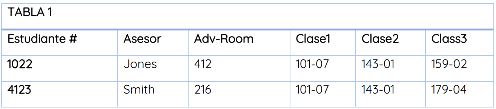
Primera forma normal: sin grupos de repetición
Las tablas solo deben tener dos dimensiones. Dado que un alumno tiene varias clases, estas clases deben aparecer en una tabla independiente. Los campos Class1, Class2 y Class3 de los registros anteriores son indicaciones de problemas de diseño. Las hojas de cálculo suelen usar la tercera dimensión, pero las tablas no deben hacerlo. Otra forma de ver este problema es con una relación de uno a varios, no ponga el lado uno y los muchos en la misma tabla. En su lugar, crea otra tabla en primera forma normal eliminando el grupo de repetición (Clase#), como se muestra a continuación:
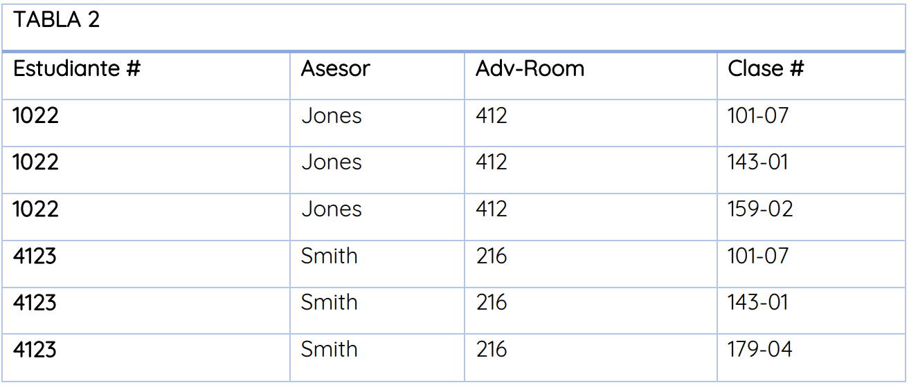
Segunda forma normal: eliminar datos redundantes
Tenga en cuenta los varios valores class# para cada valor Student# de la tabla anterior. Class# no depende funcionalmente de Student# (clave principal), por lo que esta relación no está en segundo formato normal. Las tablas siguientes muestran el Segunda forma normal:
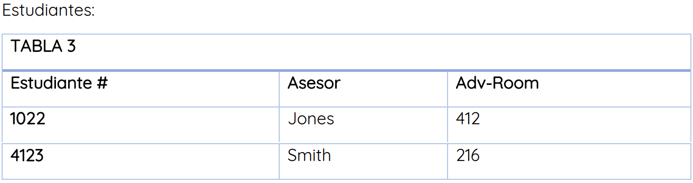
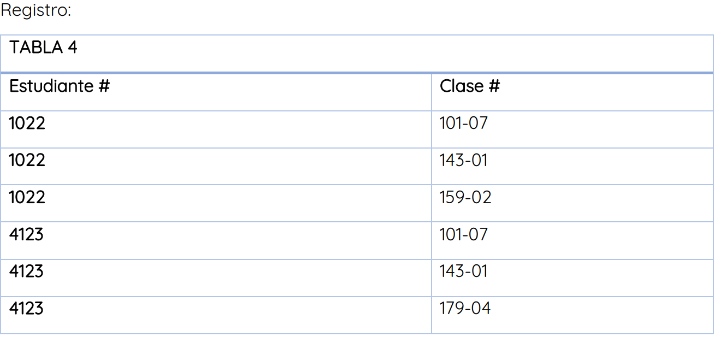
Tercera forma normal: eliminar datos que no dependen de la clave
En el último ejemplo, Adv-Room (número de oficina del asesor) depende funcionalmente del atributo Advisor. La solución es mover ese atributo de la tabla Estudiantes a la tabla Profesor, como se muestra a continuación:
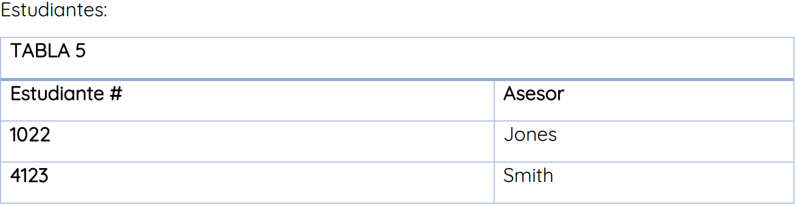
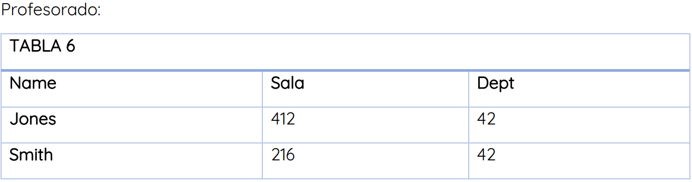